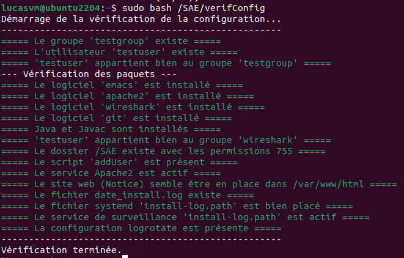

y (ou O en français).

MARTINATI Lucas - CHARLES SAMUEL
Ceci est une notice vous montrant les étapes à suivre pour configurer un poste de développement de manière propre et efficace. Vous allez créer un nouvel utilisateur, installer des logiciels de base, prendre en main un script de création d'utilisateur et gérer les logs de celui-ci.
sudo apt install git
Confirmer les informations en tapant y (ou O en français).
Clonage du dépôt et lancement du script d'installation automatique :
sudo git clone https://github.com/LucasM548/SAE-S1-3.git /SAE
sudo bash /SAE/Installation
Les informations suivantes vous seront demandées :
Confirmer les informations en tapant y (ou O en français).
Confirmer les informations en tapant y (ou O en français).
Confirmer les informations en tapant y (ou O en français).
Lors de l'installation, une boîte de dialogue demande si les non-superutilisateurs doivent être autorisés à
capturer des paquets. Vous devez répondre OUI.
Après cela, si vous voulez des précisions sur le script d'automatisation de création d'utilisateur, dirigez vous vers 6. Script d'Automatisation de Création d'Utilisateurs
Commandes à effectuer pour créer un groupe testgroup et un utilisateur testuser :
sudo groupadd testgroup
sudo adduser testuser
Lors de la création de testuser, les informations suivantes vous seront demandées :
Confirmer les informations en tapant y (ou O en français).
L'ajout de testuser au groupe testgroup :
sudo adduser testuser testgroup

Vous devez installer un ensemble de logiciels requis :
Avant toute installation, il faut mettre à jour la liste des paquets :
sudo apt update

Installation de emacs, apache2, java et javac :
sudo apt install emacs apache2 default-jdk
Confirmer les informations en tapant y (ou O en français).

Installation de wireshark :
sudo apt install wireshark
Confirmer les informations en tapant y (ou O en français).
Lors de l'installation, une boîte de dialogue demande si les non-superutilisateurs doivent être autorisés à
capturer des paquets. Vous devez répondre OUI.

Vérification que le groupe wireshark a bien été créé :
getent group wireshark

Ajout de testuser au groupe wireshark :
sudo usermod -aG wireshark testuser
Justification : Cette configuration permet à testuser d'effectuer des captures sans avoir
besoin des droits root (sudo). La commande usermod -aG ajoute le groupe
wireshark à testuser sans supprimer les groupes de testuser existants.
(-a : append, -G : group)
Note : Sous Debian, vous pouvez simplement utiliser sudo adduser testuser wireshark.
Toutefois, la commande usermod est présentée ici car elle fonctionne sur toutes les distributions
Linux.
Pour la gestion des scripts, il faut récupérer les fichiers depuis un dépôt Git.
Installation de git :
sudo apt install git
Confirmer les informations en tapant y (ou O en français).

Clonage du dépôt :
sudo git clone https://github.com/LucasM548/SAE-S1-3.git /SAE
Note : Le dépôt contient tous les scripts, mais également des fichiers de
configuration et des services systemd (qui seront nécessaire lors de la suite
de la configuration).

Donner les droits d'exécution et de lecture appropriés au dossier /SAE pour qu'il soit accessible
par tous les utilisateurs, mais modifiable uniquement par root.
sudo chmod -R 755 /SAE
Choix des droits 755 :
srm, lkt, etc.) sans pouvoir
les modifier.Ajouter le chemin /SAE/Scripts au PATH de l'utilisateur testuser en
modifiant son fichier .bashrc pour qu'il ait accès aux scripts poubelle depuis n'importe quel
répertoire :
echo 'export PATH=$PATH:/SAE/Scripts' | sudo tee -a "/home/testuser/.bashrc"
Justification : L'utilisation de sudo tee -a permet d'ajouter la ligne au fichier
.bashrc avec les droits administrateur, évitant ainsi les problèmes de permissions, le
-a signifie append et permet d'ajouter le contenu au fichier sans le remplacer.
Note : Vous pouvez simplement utiliser la commande
echo 'export PATH=$PATH:/SAE/Scripts' >> /home/testuser/.bashrc, mais uniquement si
l'utilisateur est root, avec la commande sudo -u.
Vous devez configurer plusieurs services pour qu'ils se lancent automatiquement au démarrage.
Activation et lancement du service :
sudo systemctl enable apache2
sudo systemctl start apache2
Explication : enable crée les liens symboliques nécessaires pour que systemd lance le
service à chaque démarrage. start lance le service immédiatement sans attendre le redémarrage.

Accès à la Notive version web : Le site avec la notice est déplacé vers la racine du serveur web
(/var/www/html) pour qu'il soit accessible via http://127.0.0.1.
sudo mv /SAE/Notice/* /var/www/html/
sudo rm -d /SAE/Notice
Justification : Apache2 va automatiquement chercher dans /var/www/html/ un
fichier index.html, on a donc ajouté l’index.html de notre notice directement à cette adresse.
Un service est mis en place pour surveiller les modifications du fichier /var/log/install.log et
enregistrer la date de modification dans /var/log/date_install.log.
Création du fichier de log date_install.log et install.log :
sudo touch /var/log/date_install.log
sudo touch /var/log/install.log
Déplacement des fichiers de définition systemd (.path et .service) vers
/etc/systemd/system/ :
sudo mv /SAE/install-log.path /etc/systemd/system/
sudo mv /SAE/install-log.service /etc/systemd/system/
Activation du service :
sudo systemctl daemon-reload
sudo systemctl enable install-log.path
sudo systemctl start install-log.path
Justification :
daemon-reload : Permet à systemd de recharger les services et de prendre en compte les nouveaux
fichiers ajoutés.install-log.path : Ce service "path" surveille le fichier et déclenche le service
associé (install-log.service) lorsque le fichier install.log est modifié.
[Unit]
Description=Surveille les modifications de install.log
[Path]
# Surveille les modifications du fichier var/log/install.log
PathChanged=/var/log/install.log
# Appelle le service install-log.service lors d'un changement
Unit=install-log.service
[Install]
# Active le chemin lors du démarrage du système
WantedBy=multi-user.target
[Unit]
Description=Ajoute la date dans date_install.log
[Service]
# Indique que ce service exécute la commande et s'arrête juste après
Type=oneshot
# Lorsque que le service est appelé, ajoute la date actuelle dans le fichier date_install.log (on utilise pas uniquement bash car systemd n'a pas le path)
ExecStart=/bin/bash -c 'date >> /var/log/date_install.log'
Pour éviter que les fichiers de logs ne saturent l'espace disque, Il faut configurer logrotate.
install.logIl faut créer un fichier de configuration dans /etc/logrotate.d/ avec les paramètres suivants :
size 200 : Rotation dès que le fichier dépasse 200 octets.rotate 5 : Conserver les 5 dernières archives.compress : Compresser les archives.create : Créer un nouveau fichier log vide après la rotation.missingok : Ne pas générer d'erreur si le fichier est absent.Commande :
sudo mv /SAE/install-log /etc/logrotate.d/
/var/log/install.log {
size 200
rotate 5
compress
create
missingok
}
Note : logrotate est un outil de rotation des logs qui permet de conserver les logs dans un
fichier compressé et de conserver un nombre maximum de fichiers.
date_install.logDe même pour le fichier de dates :
sudo mv /SAE/date_install /etc/logrotate.d/
/var/log/date_install.log {
size 200
rotate 5
compress
create
missingok
}
Le script nommé addUser disponible dans le dossier /SAE permet la création
d'utilisateurs à partir d'un fichier de configuration.
Le script lit un fichier config.txt ligne par ligne. Pour chaque ligne
(login,group,homedir,skeldir), il effectue les actions suivantes :
useradd.Documents et
Downloads..bashrc pour inclure le chemin des scripts (/SAE) dans le
PATH.e pour emacs et w pour wireshark.
/var/log/install.log.Note : Un script removeUser est également disponible pour supprimer les utilisateurs et les
groupes contenu dans le même fichier config.txt. De plus, nous avons choisi de créer les
répertoires Documents et Downloads ainsi que de modifier le fichier
.bashrc individuellement pour chaque utilisateur, plutôt que de modifier le skel global. Sa évite
les éventuels oublis (alias, PATH, répertoires manquants) lors de la création manuelle de nouveaux skel par
l'administrateur.
Le script addUser :
#!/bin/bash
# commande addUser qui permet de créer des utilisateurs
# Vérifie qu'il y a exactement un argument
if [ $# -ne 1 ]; then
# \033[33m avec le -e permet de mettre le texte en jaune
# et \033[0m permet de remettre la couleur blanche (sinon toutes les prochaines lignes seront en jaune)
echo -e "\033[33m====== Usage: $0 <fichier_config> ======\033[0m"
exit 1
fi
# Vérifie que l'argument est bien un fichier valide
if [ ! -f "$1" ]; then
# \033[31m avec le -e permet de mettre le texte en rouge
# et \033[0m permet de remettre la couleur blanche (sinon toutes les prochaines lignes seront en rouge)
echo -e "\033[31m====== Erreur : $1 n'est pas un fichier valide ======\033[0m"
exit 2
fi
# Vérifie que l'utilisateur a bien lancé le script en mode administrateur (avec un sudo avant)
# Lorsque qu'on fait un sudo id -u, ça renvoie 0 car on a l'UID 0
# Evite le $(whoami) = "root" car si un utilisateur s'appelle root, le script va fonctionner
if [ $(id -u) -ne 0 ]; then
echo -e "\033[31m====== Erreur : Le script doit être exécuté en mode administrateur (sudo) ======\033[0m"
exit 3
fi
# Stocke le nombre de lignes du fichier configuration
nbLines=$(wc -l < "$1") # Le < permet de retourner uniquement le nombre de lignes
mkdir -p /var/log
touch /var/log/install.log
log="/var/log/install.log"
# Analyse de chaque ligne du fichier
for ((i = 1; i <= $nbLines+1; i++)); do
# Stocke la ligne numéro i dans une variable (le tr -d " " permet de supprimer les espaces)
Lines=$(sed -n "${i}p" "$1" | tr -d " ")
# Le <<< permet d'envoyer une chaîne de caractères sans utiliser un echo avec un pipe
user=$(cut -d ',' -f1 <<< "$Lines")
group=$(cut -d ',' -f2 <<< "$Lines")
rephome=$(cut -d ',' -f3 <<< "$Lines")
repskel=$(cut -d ',' -f4 <<< "$Lines")
# le -z permet de vérifier si la variable est vide
# (- z pour Zero, elle vérifie si la chaîne est de longueur nulle)
if [ -z "$Lines" ]; then
# Si la ligne est vide, on passe à la suivante (si la fin à un saut de ligne ou non, ça fonctionneras)
continue
else
if [ $(awk -F',' '{print NF}' <<< $Lines) = 4 ] && [ -d "$repskel" ]&& [ -d "$rephome" ]; then
# le -f permet de ne rien faire si le groupe existe déjà
groupadd -f "$group"
echo "Le groupe $group a été créé" >> $log
# le > /dev/null 2>&1 sert à rediriger les potentiels message d'erreur
useradd -m -k "$repskel" -d "$rephome/$user" -g "$group" "$user" >> $log 2>&1
if [ $? = 0 ]; then
# \033[32m avec le -e permet de mettre le texte en vert
# et \033[0m permet de remettre la couleur blanche (sinon toutes les prochaines lignes seront en vert)
echo "L'utilisateur $user a été créé avec le répertoire $rephome/$user et le squelette $repskel" >> $log
echo -e "\033[32m====== L'utilisateur $user a bien été créé dans le groupe $group ======\033[0m"
echo "====== L'utilisateur $user a bien été créé dans le groupe $group ======" >> $log
# mkdir -p pour créer les fichiers Downloads et Documents s'ils ne sont pas encore créés
mkdir -p "$rephome/$user/Downloads" "$rephome/$user/Documents"
if [ ! -f "$rephome/$user/.bashrc" ]; then
touch "$rephome/$user/.bashrc"
echo "Le fichier .bashrc a été créé" >> $log
fi
echo -e "alias e='emacs'\nalias w='wireshark'" >> $rephome/$user/.bashrc
echo "Les alias e pour 'emacs' et w pour 'wireshark' ont été ajoutés pour l'utilisateur $user" >> $log
# Ajouter le path /Scripts à la suite des paths déjà présents dans le fichier .bashrc
echo -e 'export PATH="$PATH:/SAE/Scripts"' >> $rephome/$user/.bashrc
echo "Le path '/SAE/Scripts' a bien été ajouté au .bashrc de l'utilisateur $user" >> $log
# Rendre les dossiers à l'utilisateur (sinon ils sont à root)
chown -R "$user:$group" "$rephome/$user"
echo "Les droits du dossier $rephome/$user ont bien été donnés à $user du groupe $group" >> $log
# AJouter l'utilisateur dans le groupe wireshark pour qu'il puisse l'utiliser
adduser $user wireshark >> $log 2>&1
echo "L'utilisateur $user a été ajouté au groupe wireshark" >> $log
else
echo -e "\033[31m====== Erreur : L'utilisateur $user n'a pas pu être ajouté (il existe peut-être déjà) ======\033[0m"
echo "====== Erreur : L'utilisateur $user n'a pas pu être ajouté (il existe peut-être déjà) ======" >> $log
fi
else
echo -e "\033[31m====== Erreur : La ligne $i est défaillante ======\033[0m"
echo "====== Erreur : La ligne $i est défaillante ======" >> $log
fi
echo "================================================" >> $log
fi
done
Exemple de commande utilisée :
sudo bash /SAE/addUser /SAE/config.txt
Extrait du fichier de configuration (config.txt) :
u1, g1, /home, /etc/skel/
u2, g1, /home, /etc/skel/
Note : Remplir le contenu de config.txt avec les utilisateurs que vous voulez créer (ne pas utiliser de chemin contenant des espaces).

Le système est désormais configuré :
testuser.emacs, apache2,
wireshark, javac et java).addUser qui permet de créer des utilisateurs.addUser.sudo bash /SAE/verifConfig
Note : Ce script vérifie la présence des logiciels, des utilisateurs, des services systemd et des configurations de logrotate.
